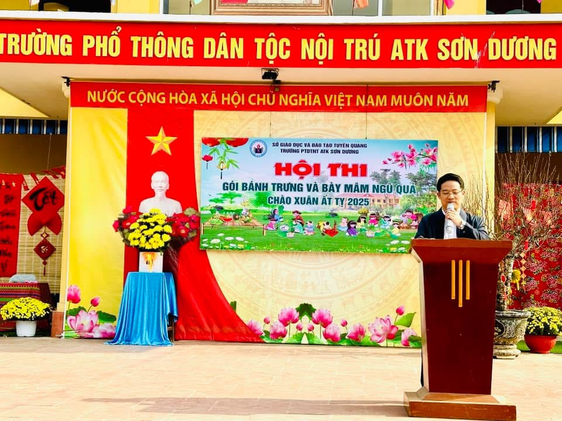
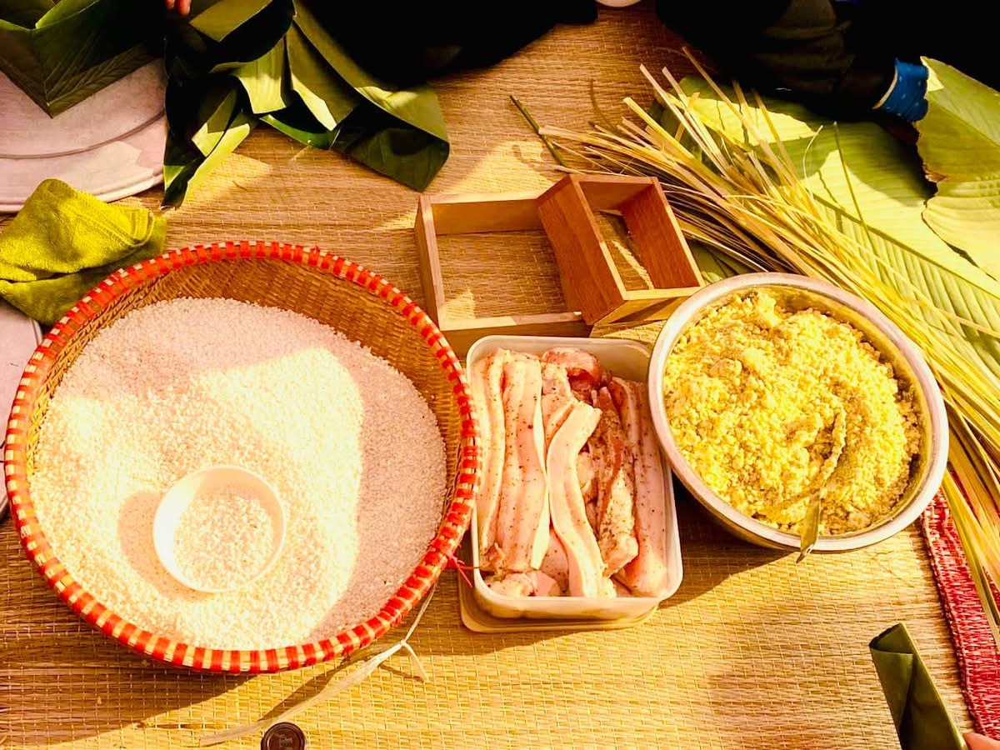

CHÀO XUÂN ẤT TỴ 2025 TẠI TRƯỜNG PTDTNT ATK SƠN DƯƠNG
Trong không khí rộn ràng đón Tết Nguyên Đán Ất Tỵ, từ ngày 17/01/2025-18/01/2025, Trường PTDTNT ATK Sơn Dương diễn ra Hội thi gói bánh Chưng và bày mâm Ngũ quả thu hút toàn thể cán bộ giáo viên, nhân viên, học sinh và phụ huynh học sinh tham dự. Hội thi góp phần giúp các em học sinh hiểu hơn về ý nghĩa của Tết cổ truyền Việt Nam, qua đó giáo dục học sinh lòng tự hào dân tộc, giữ gìn và phát huy nét đẹp bản sắc văn hóa của dân tộc Việt Nam.
Đến dự với hội thi có đồng chí Lương Việt Đức - Bí thư chi bộ, hiệu trưởng; đồng chí Trịnh Xuân Bảo - phó Bí thư chi bộ, phó hiệu trưởng; đồng chí Nguyễn Thị Vân Anh - phó hiệu trưởng; đại diện phụ huynh học sinh các lớp cùng toàn thể giáo viên nhân viên và các em học sinh nhà trường. Với sự tham gia của 14 đội đến từ các lớp, các thí sinh tự tin thể hiện sự sáng tạo của mình vào việc gói và trưng bày mâm Ngũ quả tạo nên những tác phẩm đa dạng và đầy sắc màu.
Tại hội thi, thầy Lương Việt Đức - Hiệu trưởng biểu dương tinh thần của các em học sinh và nhấn mạnh: Bánh chưng là biểu tượng truyền thống, nét đẹp văn hóa của dân tộc Việt Nam trong mỗi độ Tết đến, Xuân về. Hội thi gói bánh chưng và bày mâm ngũ quả góp phần giáo dục, tuyên truyền nâng cao nhận thức cho giáo viên, nhân viên, học sinh đồng thời bồi đắp tình yêu quê hương, đất nước qua việc gìn giữ những truyền thống văn hóa cổ truyền.

Để hội thi diễn ra đúng kế hoạch, chất lượng, đạt được mục đích, đạt được yêu cầu đề ra, các đội thi đã chuẩn bị đầy đủ nguyên vật liệu như: Gạo nếp, đậu xanh, thịt lợn, lá dong, lạt giang và các gia vị cần thiết; các công đoạn ngâm gạo, ngâm đỗ, sơ chế và tẩm ướp gia vị, chuẩn bị lá, lạt được các đội thi thực hiện chu đáo. Mâm ngũ quả cũng được chuẩn bị không kém công phu nào là chuối xanh, bưởi, táo, cam, dứa, xoài, …cả những câu đối, lời chúc đầy ý nghĩa.

Phần thi thứ nhất diễn ra thật sôi động từ những đôi bàn tay khéo léo kết hợp với sự thông minh, nhanh nhẹn của chính các em học sinh, những chiếc bánh chưng xanh vuông vắn, những chiếc bánh chưng tày, bánh chưng gù lần lượt được hoàn thành. Và phải nói vui nhất vẫn là không khí háo hức, chờ đợi khi những chiếc bánh chưng xinh xắn được đem vào luộc, vớt ra mùi bánh thơm nức gợi không khí đầm ấm bên gia đình trong những ngày đón năm mới.
Phần thi thứ 2 diễn ra cũng không kém phần sôi động, dưới những bàn tay khéo léo của 14 đội chơi các mâm Ngũ quả cũng lần lượt hoàn thành và được trình bày đẹp mắt với lời thuyết minh ấm áp của các bạn đoàn viên, đội viên mâm ngũ quả cùng những tấm bánh trở lên sinh động và ý nghĩa hơn khắc sâu nét cổ truyền dân tộc Việt Nam.
Phần quan trọng và cũng là phần cuối của hội thi là phần công bố và trao giải thưởng: Giải Nhất thuộc về hai lớp đó là lớp 8A và 10B ; giải Nhì đó là lớp 12A và 9A; giải Ba thuộc về lớp 12B và 8B, các lớp còn lại đạt giải khuyến khích.